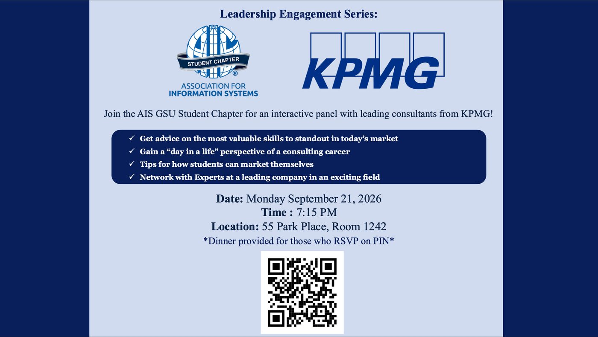

Generative AI is evolving into agentic AI — systems that reason, plan, adapt, and collaborate in complex environments. This course teaches the foundations and the practice: from the agent loop and tool use to evaluation, safety, and deployment, ending in a real capstone agent.
The Association for Information Systems (AIS) GSU Student Chapter is hosting two interactive panels with consultants from major firms — advice on the skills that stand out in today's market, a day-in-the-life view of consulting careers, tips on marketing yourself, and direct networking.
🗓 KPMG Consulting panel (Leadership Engagement Series) — Monday Sept 21, 7:15 pm, 55 Park Place, Room 1242. Dinner provided for those who RSVP on PIN.
🗓 Breaking Into Consulting: Capgemini panel — Thursday Oct 1. Details and RSVP on PIN.

Scan the QR code on the flyer to RSVP · click to enlarge
AIS chapter on PIN — RSVP & event details ↗ · Browse PIN events ↗
A virtual hackathon from AWS: build an AI agent that solves a real problem for real people, using the Strands Agents SDK. Three tracks — 🏠 Everyday Agents (bills, appointments, life admin), 💼 Professional Agents (scheduling, follow-ups, reporting), 🤝 Good Neighbor Agents (help a nonprofit, school, or local org). Open to all skill levels worldwide, students included (country eligibility rules apply), and every participant who submits gets $50 in AWS credits. Winners announced Oct 14, 2026.
This is exactly the skill set you are practicing in this course — the Job Search Agent you're building for Group Assignment 1 is the same design problem: an agent that automates work nobody wants to do, with guardrails and a human in the loop. If your GA1 agent turns out well, polishing it into a hackathon entry is a very short step.
Each week ships as an interactive mini-site: clickable architecture explorers, step-through agent-loop simulators, live concept checks, hidden answers on every question, and full lab instructions. Readings and quiz scope are listed at the end of each week.
LLMs → agents, the loop, agentic coding, prompting & context engineering, reasoning & planning.
Tool use and function calling, MCP & A2A, memory & RAG.
Evaluation & reliability, multi-agent systems, security & governance.
Deployment & agentic commerce, capstone studios, final presentations.
Introduction to Agentic AI + What Enterprises Actually Use (PowerPoint, ~66 slides, with speaker notes and references).
Download .pptx ↓Lesson deck, step-by-step lab guide, starter kit (résumé, preferences, six-job dataset with a prompt-injection test, Python baseline), and pre-class prep.
Download .zip ↓Instructor, Computer Information Systems, J. Mack Robinson College of Business, Georgia State University. This course pairs research-grounded foundations (ReAct, Toolformer, LLM-agent surveys, τ-bench) with what enterprises actually deploy — and every claim on these pages is dated and sourced, because agentic AI moves fast. The course is offered within PATH — Pathways for AI Training & Hiring, a national initiative led by MIT RAISE and Georgia State.
Faculty profile ↗ · Personal site ↗ · xfu11 [at] gsu [dot] edu
Agent loops, autonomy, and control flow are abstract until you can push on them. Each week's site turns the core abstractions into things students can click, step through, and break — the same standard the course applies to agents themselves: don't trust the demo, test the behavior.